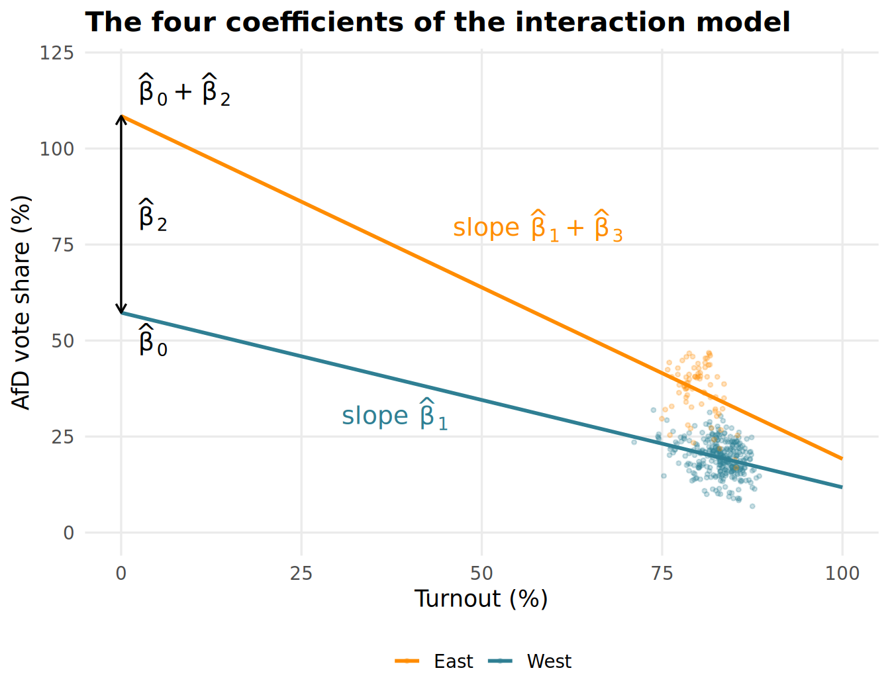
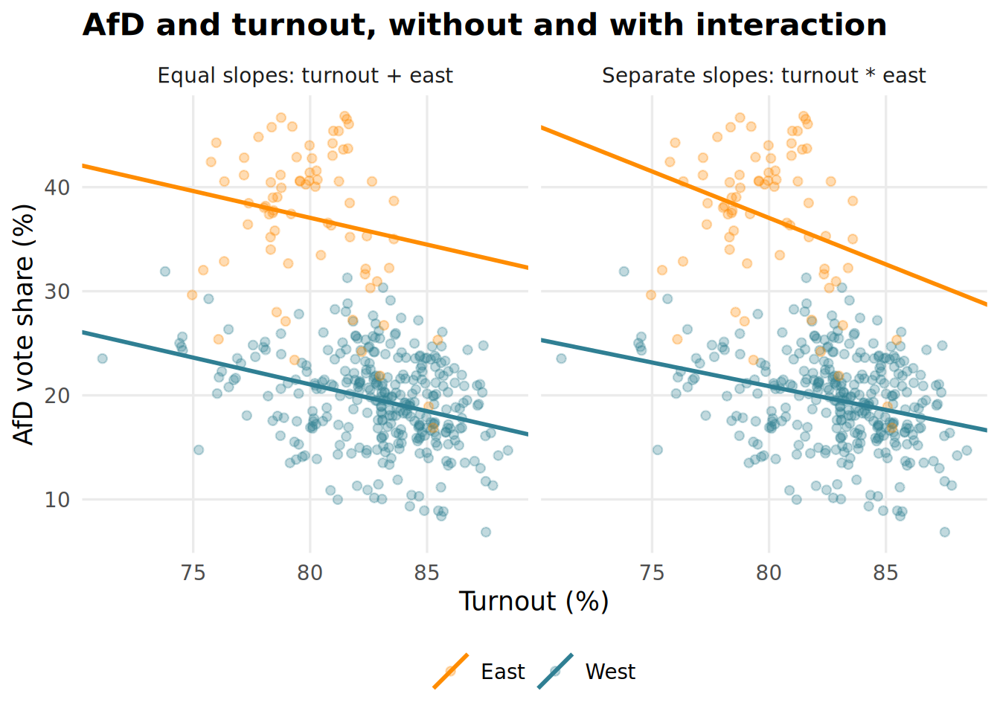
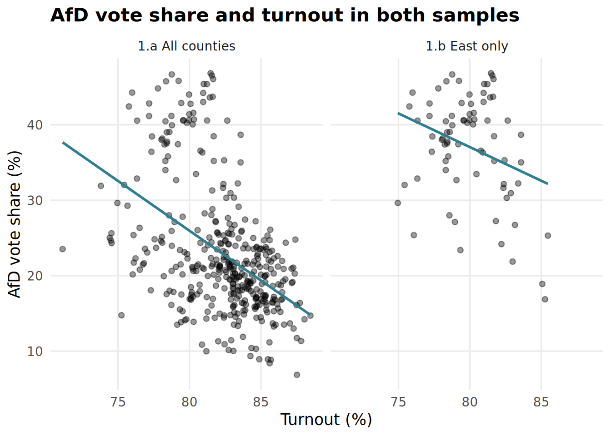
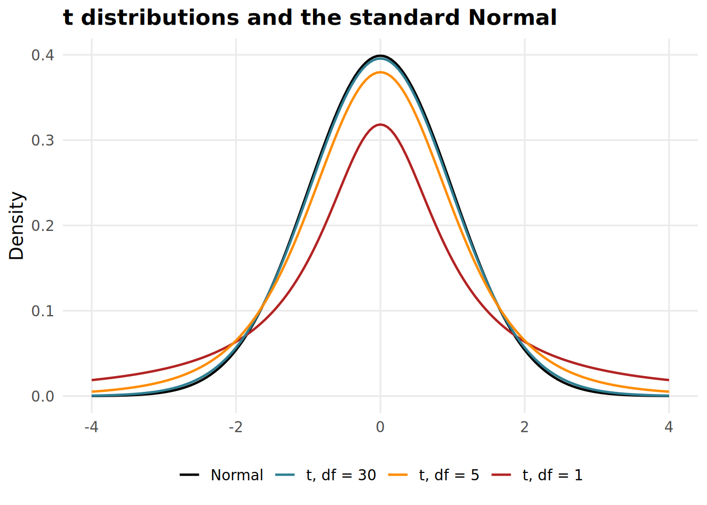
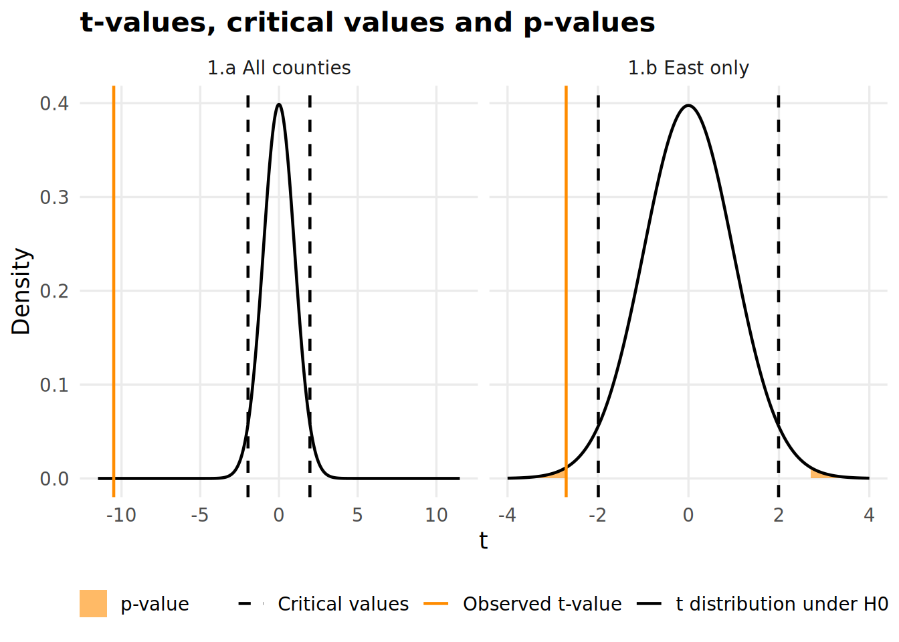
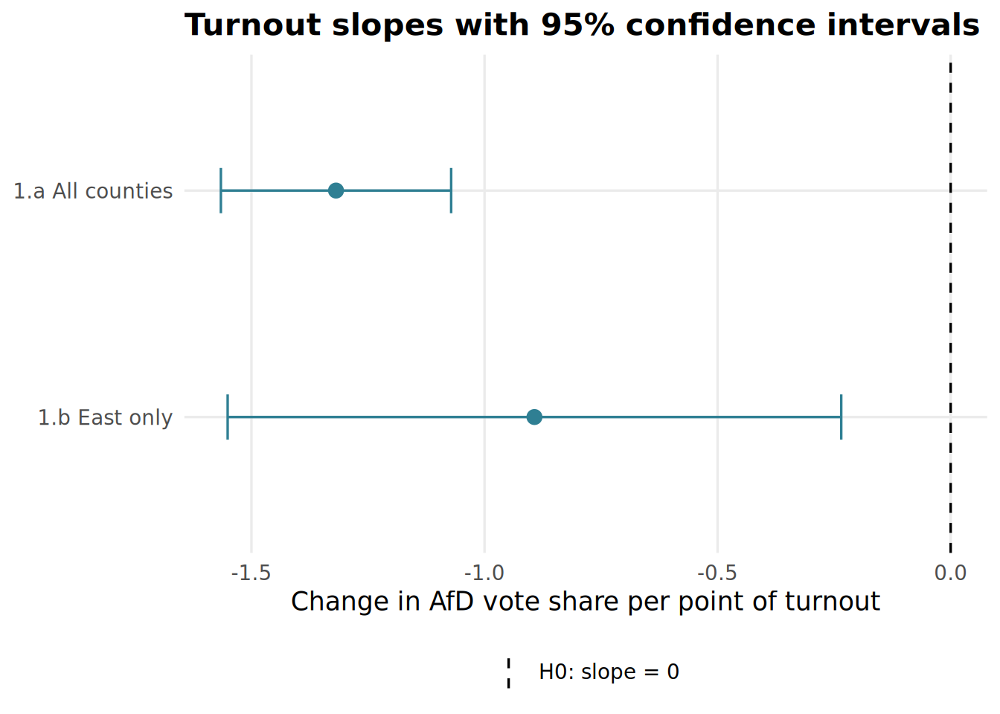
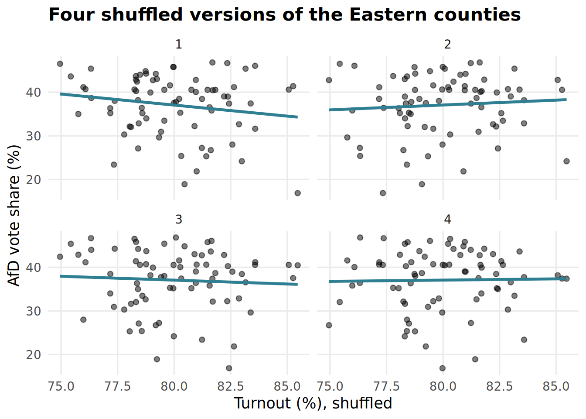
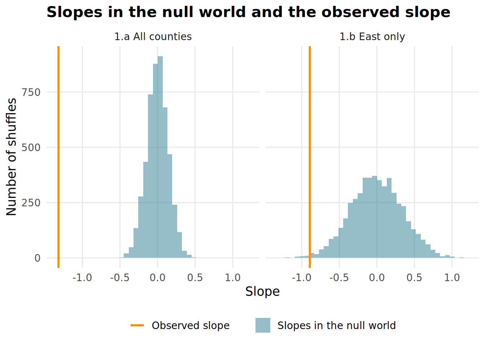
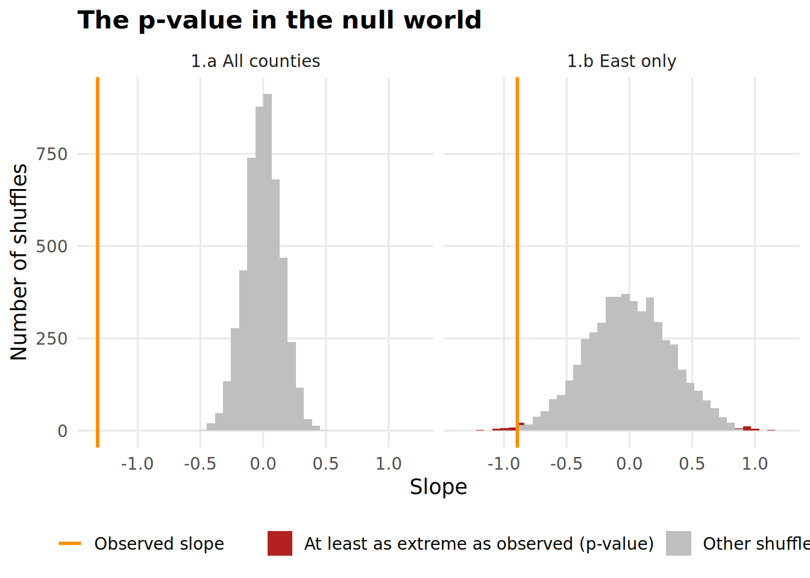
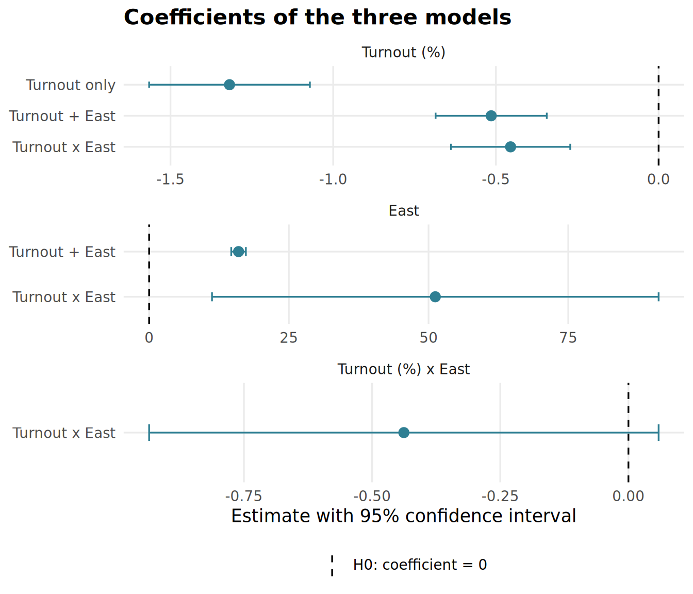

if (!require(pacman)) install.packages("pacman")p_load(tidyverse, broom, modelsummary, infer)
set.seed(606)Interactions with a dummy, standard errors, t-values and p-values for regression coefficients, and simulated null worlds
Next to broom and modelsummary, we load infer, which simulates hypothesis tests with a few tidyverse-style verbs. The seed makes those simulations reproducible.
if (!require(pacman)) install.packages("pacman")p_load(tidyverse, broom, modelsummary, infer)
set.seed(606)Week 5 held East constant with a dummy, which gives both regions the same turnout slope. Today we first let that slope differ between East and West with an interaction. Then we turn to what Weeks 4 and 5 left aside: standard errors, t-values and p-values. How certain are we about a slope, and is it distinguishable from zero?
The GERDA counties from Week 5 again, without Berlin and with the east dummy.
gerda <- read_csv("data/federal_cty_harm.csv")east_codes <- c("12", "13", "14", "15", "16")
counties <- gerda |>
filter(
election_year == 2025,
state != "11"
) |>
mutate(
density = population / area,
east = if_else(state %in% east_codes, 1, 0),
region = if_else(east == 1, "East", "West")
) |>
select(
county_code, state, east, region,
cdu_csu, spd, greens = gruene, fdp, linke = linke_pds, afd, bsw,
turnout, density
) |>
mutate(across(cdu_csu:turnout, ~ .x * 100))
counties# A tibble: 399 x 13
county_code state east region cdu_csu spd greens fdp linke afd bsw turnout density
<chr> <chr> <dbl> <chr> <dbl> <dbl> <dbl> <dbl> <dbl> <dbl> <dbl> <dbl> <dbl>
1 01001 01 0 West 17.4 15.7 20.6 3.30 12.9 13.8 3.33 79.4 1606.
2 01002 01 0 West 18.7 19.3 23.1 3.83 14.4 10.9 3.36 82.5 2075.
3 01003 01 0 West 21.9 21.4 18.3 3.79 10.9 15.3 3.78 79.5 1010.
4 01004 01 0 West 25.3 19.6 10.5 4.14 8.06 22.3 4.62 76.2 1109.
5 01051 01 0 West 30.3 17.7 9.15 5.51 6.10 21.1 3.51 82.1 93.8
6 01053 01 0 West 28.8 18.5 13.2 5.07 7.12 19.1 3.80 84.1 159.
7 01054 01 0 West 29.1 17.3 13.4 4.80 6.17 14.5 3.04 83.2 80.4
8 01055 01 0 West 31.2 19.9 12.6 5.16 5.92 17.6 3.09 82.9 145.
9 01056 01 0 West 28.9 20.2 14.5 5.06 7.57 15.6 3.57 84.6 479.
10 01057 01 0 West 29.9 19.2 16.0 4.32 6.27 15.7 3.03 86.2 120.
# i 389 more rowsWe also keep each region as its own tibble:
counties_east <- counties |>
filter(east == 1)
counties_west <- counties |>
filter(east == 0)counties |>
count(region)# A tibble: 2 x 2
region n
<chr> <int>
1 East 75
2 West 324One color per region, used in every plot below:
region_colors <- c(
"West" = course_primary,
"East" = "darkorange"
)Week 5 ended with AfD support regressed on turnout and the east dummy:
control_model <- lm(afd ~ turnout + east, data = counties)
control_model |>
tidy()# A tibble: 3 x 5
term estimate std.error statistic p.value
<chr> <dbl> <dbl> <dbl> <dbl>
1 (Intercept) 62.2 7.21 8.63 1.51e-16
2 turnout -0.514 0.0869 -5.92 6.90e- 9
3 east 16.0 0.665 24.1 1.80e-79The dummy shifts the intercept: the East gets its own level of AfD support, but both regions share one turnout slope. An interaction drops that assumption by adding the product of the two predictors:

In the terms of Brambor, Clark and Golder (2006), East is the modifying variable: it changes how turnout relates to AfD support. Turnout and East are the constitutive terms of the interaction term , and both always stay in the model.
In a formula, turnout * east stands for both variables and their product, which lm() labels turnout:east:
interaction_model <- lm(afd ~ turnout * east, data = counties)
interaction_model |>
tidy()# A tibble: 4 x 5
term estimate std.error statistic p.value
<chr> <dbl> <dbl> <dbl> <dbl>
1 (Intercept) 57.3 7.73 7.40 0.000000000000807
2 turnout -0.455 0.0932 -4.88 0.00000155
3 east 51.2 20.3 2.52 0.0121
4 turnout:east -0.438 0.253 -1.73 0.0839 interaction_beta_0 <- interaction_model |>
tidy() |>
filter(term == "(Intercept)") |>
pull(estimate)
interaction_beta_1 <- interaction_model |>
tidy() |>
filter(term == "turnout") |>
pull(estimate)
interaction_beta_2 <- interaction_model |>
tidy() |>
filter(term == "east") |>
pull(estimate)
interaction_beta_3 <- interaction_model |>
tidy() |>
filter(term == "turnout:east") |>
pull(estimate)Plugging in both values of the dummy gives one line per region. In the West, , and every term multiplied by it drops out:
In the East, . Nothing drops out except the factor 1, so the East gets a different intercept and a different slope:
For our model:
The slope of each line is the marginal effect of turnout: the change in AfD support for one more point of turnout, which now depends on the region.
region_lines <- tibble(
region = c("West", "East"),
intercept = c(interaction_beta_0, interaction_beta_0 + interaction_beta_2),
slope = c(interaction_beta_1, interaction_beta_1 + interaction_beta_3)
)
region_lines# A tibble: 2 x 3
region intercept slope
<chr> <dbl> <dbl>
1 West 57.3 -0.455
2 East 108. -0.893These are the lines of two separate regressions, one per region:
west_model <- lm(afd ~ turnout, data = counties_west)
west_model |>
tidy()# A tibble: 2 x 5
term estimate std.error statistic p.value
<chr> <dbl> <dbl> <dbl> <dbl>
1 (Intercept) 57.3 6.83 8.39 0.00000000000000156
2 turnout -0.455 0.0823 -5.53 0.0000000666 east_model <- lm(afd ~ turnout, data = counties_east)
east_model |>
tidy()# A tibble: 2 x 5
term estimate std.error statistic p.value
<chr> <dbl> <dbl> <dbl> <dbl>
1 (Intercept) 108. 26.4 4.11 0.000104
2 turnout -0.893 0.330 -2.70 0.00852 So the coefficients read as follows:
and are no longer overall effects. Each holds only where the other variable is zero, which is the article’s main warning: do not read constitutive terms as unconditional effects. Extending both lines to a turnout of 0% shows where each coefficient sits:

All counties lie between 71% and 89% turnout, far to the right of where and are read off.
The lines of the interaction model are already in region_lines. The model with equal slopes gives the West as intercept, the East , and both the slope :
control_beta_0 <- control_model |>
tidy() |>
filter(term == "(Intercept)") |>
pull(estimate)
control_beta_1 <- control_model |>
tidy() |>
filter(term == "turnout") |>
pull(estimate)
control_beta_2 <- control_model |>
tidy() |>
filter(term == "east") |>
pull(estimate)control_lines <- tibble(
model = "Equal slopes: turnout + east",
region = c("West", "East"),
intercept = c(control_beta_0, control_beta_0 + control_beta_2),
slope = control_beta_1
)
interaction_lines <- region_lines |>
mutate(model = "Separate slopes: turnout * east")
slope_lines <- bind_rows(control_lines, interaction_lines)
slope_lines# A tibble: 4 x 4
model region intercept slope
<chr> <chr> <dbl> <dbl>
1 Equal slopes: turnout + east West 62.2 -0.514
2 Equal slopes: turnout + east East 78.2 -0.514
3 Separate slopes: turnout * east West 57.3 -0.455
4 Separate slopes: turnout * east East 108. -0.893geom_abline() draws a line from its intercept and slope. The counties carry no model column, so they appear in both panels:
ggplot() +
geom_point(
data = counties,
mapping = aes(x = turnout, y = afd, color = region),
alpha = 0.3
) +
geom_abline(
data = slope_lines,
mapping = aes(intercept = intercept, slope = slope, color = region),
linewidth = 1
) +
facet_wrap(~model) +
scale_color_manual(values = region_colors) +
labs(
title = "AfD and turnout, without and with interaction",
x = "Turnout (%)",
y = "AfD vote share (%)",
color = NULL
) +
theme_intror()
With equal slopes, one more point of turnout goes along with the same drop in AfD support everywhere, and the East lies a constant distance above the West. With the interaction, each region has its own marginal effect of turnout: -0.45 points of AfD support per point of turnout in the West, and -0.89 in the East, almost twice as steep.
The East-West gap is then no longer one number either. It depends on turnout. At a turnout of 75% the East is predicted to vote 18.4 points more AfD than the West, at 85% only 14 points. The AfD’s Eastern advantage is largest where few people vote. As in Week 5, this describes counties, not a causal effect of turnout.
Whether the two slopes really differ, or whether any of them differs from zero, is the question for the rest of the session.
Every slope above is an estimate  of an unknown parameter
of an unknown parameter  , and like the means in Week 3 it comes with uncertainty. We work this out for the simplest case, one predictor:
, and like the means in Week 3 it comes with uncertainty. We work this out for the simplest case, one predictor:
We run the same model on two sets of counties, side by side:
Same model, same variables. Only the number of counties, and how much they differ from each other, changes.
all_model <- lm(afd ~ turnout, data = counties)
all_model |>
tidy()# A tibble: 2 x 5
term estimate std.error statistic p.value
<chr> <dbl> <dbl> <dbl> <dbl>
1 (Intercept) 131. 10.4 12.7 0.000000000000000000000000000000319
2 turnout -1.32 0.126 -10.5 0.0000000000000000000000665 Next to each estimate, tidy() reports three more numbers. Below, we go through what each of them means and where it comes from. First a look at both samples: augment() gives the fitted values of each model, labelled by sample and stacked into one tibble:
all_fit <- all_model |>
augment() |>
mutate(sample = "1.a All counties")
east_fit <- east_model |>
augment() |>
mutate(sample = "1.b East only")
test_fits <- bind_rows(all_fit, east_fit)test_fits |>
ggplot(aes(x = turnout)) +
geom_point(aes(y = afd), alpha = 0.4) +
geom_line(aes(y = .fitted), color = course_primary, linewidth = 1) +
facet_wrap(~sample) +
labs(
title = "AfD vote share and turnout in both samples",
x = "Turnout (%)",
y = "AfD vote share (%)"
) +
theme_intror()
Per sample, we need four numbers. Three of them come from glance(), which describes a model as a whole in one row, and tidy(), which has a row per coefficient. We also keep what both report about uncertainty, to compare with our own results at the end. First the model-level numbers, labelled by sample and stacked:
all_model_stats <- all_model |>
glance() |>
mutate(sample = "1.a All counties")
east_model_stats <- east_model |>
glance() |>
mutate(sample = "1.b East only")
slope_model_stats <- bind_rows(all_model_stats, east_model_stats) |>
select(sample, nobs, r.squared, deviance, df.residual, sigma)
slope_model_stats# A tibble: 2 x 6
sample nobs r.squared deviance df.residual sigma
<chr> <int> <dbl> <dbl> <int> <dbl>
1 1.a All counties 399 0.217 22382. 397 7.51
2 1.b East only 75 0.0910 3295. 73 6.72The same for tidy(), keeping the turnout coefficient:
all_coefs <- all_model |>
tidy(conf.int = TRUE) |>
mutate(sample = "1.a All counties")
east_coefs <- east_model |>
tidy(conf.int = TRUE) |>
mutate(sample = "1.b East only")
slope_coefs <- bind_rows(all_coefs, east_coefs) |>
filter(term == "turnout") |>
select(sample, estimate, std.error, statistic, p.value, conf.low, conf.high)
slope_coefs# A tibble: 2 x 7
sample estimate std.error statistic p.value conf.low conf.high
<chr> <dbl> <dbl> <dbl> <dbl> <dbl> <dbl>
1 1.a All counties -1.32 0.126 -10.5 0.0000000000000000000000665 -1.57 -1.07
2 1.b East only -0.893 0.330 -2.70 0.00852 -1.55 -0.235Finally, we join the model-level numbers to the coefficients:
slope_tests <- slope_coefs |>
left_join(slope_model_stats, by = "sample")
slope_tests# A tibble: 2 x 12
sample estimate std.error statistic p.value conf.low conf.high nobs r.squared deviance df.residual sigma
<chr> <dbl> <dbl> <dbl> <dbl> <dbl> <dbl> <int> <dbl> <dbl> <int> <dbl>
1 1.a All counties -1.32 0.126 -10.5 6.65e-23 -1.57 -1.07 399 0.217 22382. 397 7.51
2 1.b East only -0.893 0.330 -2.70 8.52e- 3 -1.55 -0.235 75 0.0910 3295. 73 6.72The slope, as in Week 4, is estimate:
slope_tests |>
select(sample, estimate)# A tibble: 2 x 2
sample estimate
<chr> <dbl>
1 1.a All counties -1.32
2 1.b East only -0.893The number of observations is nobs, and the sum of squared residuals is what glance() calls deviance:
slope_tests |>
select(sample, nobs, deviance)# A tibble: 2 x 3
sample nobs deviance
<chr> <int> <dbl>
1 1.a All counties 399 22382.
2 1.b East only 75 3295.And the sum of squares of , which measures how much turnout varies:
slope_tests <- slope_tests |>
# shortcut for the sum of squares via R^2 (one predictor only), step by step in Week 4, "OLS by hand"
mutate(ssx = r.squared / (1 - r.squared) * deviance / estimate^2)
slope_tests |>
select(sample, ssx)# A tibble: 2 x 2
sample ssx
<chr> <dbl>
1 1.a All counties 3571.
2 1.b East only 414.The degrees of freedom count how many observations are left to judge the fit once the model is estimated. Every estimated coefficient uses one up: through two counties a line fits perfectly, and nothing is left to tell how far off it might be. So from we subtract the slopes and the intercept. Here .
slope_tests <- slope_tests |>
mutate(df = nobs - 1 - 1)The error term belongs to the true model. Its variance is unknown, because we never observe the errors. What we do observe are the residuals of the fitted line. The residual variance is our estimate of built from them.
It divides by the degrees of freedom, not by . OLS picks the line that makes the residuals as small as possible, so they are on average a little smaller than the true errors. Dividing by a smaller number makes up for that.
slope_tests <- slope_tests |>
mutate(sigma2_hat = deviance / df)The standard error of the slope puts the residual variance in relation to the variation in :
slope_tests <- slope_tests |>
mutate(se = sqrt(sigma2_hat / ssx))
slope_tests |>
select(sample, df, sigma2_hat, ssx, se)# A tibble: 2 x 5
sample df sigma2_hat ssx se
<chr> <dbl> <dbl> <dbl> <dbl>
1 1.a All counties 397 56.4 3571. 0.126
2 1.b East only 73 45.1 414. 0.330The residual variance is similar in both samples. The East has far fewer counties and so much less variation in turnout to learn from, which makes its standard error more than twice as large.
A hypothesis test asks what the world would look like if there were no relationship at all, and whether our estimate fits into that world. The null hypothesis  says the true slope is zero, the alternative hypothesis says it is not:
says the true slope is zero, the alternative hypothesis says it is not:
Zero is the usual null hypothesis, but not the only possible one. can be any value worth testing against, for instance a slope that a theory predicts or that an earlier study found.
The t-value measures how many standard errors the estimate lies away from the hypothesized value :
slope_tests <- slope_tests |>
mutate(t_value = estimate / se)
slope_tests |>
select(sample, estimate, se, t_value)# A tibble: 2 x 4
sample estimate se t_value
<chr> <dbl> <dbl> <dbl>
1 1.a All counties -1.32 0.126 -10.5
2 1.b East only -0.893 0.330 -2.70If is true, follows a t distribution with degrees of freedom:
It is not Normal because the standard error uses the estimate in place of the true . That extra uncertainty gives the t distribution heavier tails, most visibly when the degrees of freedom are few. dt(), pt() and qt() work like Week 2’s dnorm(), pnorm() and qnorm().

The 97.5% quantile shows the same thing in numbers. The last two rows are the degrees of freedom of our two samples:
tibble(df = c(1, 5, 30, 73, 397)) |>
mutate(
t_quantile = qt(0.975, df),
z_quantile = qnorm(0.975)
)# A tibble: 5 x 3
df t_quantile z_quantile
<dbl> <dbl> <dbl>
1 1 12.7 1.96
2 5 2.57 1.96
3 30 2.04 1.96
4 73 1.99 1.96
5 397 1.97 1.96From about 30 degrees of freedom on, the two barely differ. That is why this rule of thumb works: a 95% confidence interval is roughly the estimate plus or minus two standard errors.
We choose a significance level before looking at the result, conventionally . The critical value cuts off in each tail of the t distribution:
alpha <- 0.05
slope_tests <- slope_tests |>
mutate(t_critical = qt(1 - alpha / 2, df))We reject if the t-value is more extreme than the critical value:
t_(1 - alpha/2, thin n - k - 1)">
slope_tests <- slope_tests |>
mutate(reject_h0 = abs(t_value) > t_critical)
slope_tests |>
select(sample, t_value, t_critical, reject_h0)# A tibble: 2 x 4
sample t_value t_critical reject_h0
<chr> <dbl> <dbl> <lgl>
1 1.a All counties -10.5 1.97 TRUE
2 1.b East only -2.70 1.99 TRUE Rejecting at means: if the true slope were zero, a t-value this far from zero would turn up in fewer than 5% of all samples. We treat that as too unlikely to be chance and conclude that the slope differs from zero. It is then called statistically significant at the 5% level. The price: whenever is in fact true, we still reject it in 5% of the cases.
Different researchers prefer different significance levels. The p-value avoids the choice: it is the probability of a t-value at least as extreme as ours if were true.
abs(t^*)) = 2 dot "Pr"(t_(n - k - 1) < -abs(t^*))">
pt() returns the probability to the left of a value. We take the left tail below and double it, since the t distribution is symmetric:
slope_tests <- slope_tests |>
mutate(p_value = 2 * pt(-abs(t_value), df))
slope_tests |>
select(sample, t_value, df, p_value)# A tibble: 2 x 4
sample t_value df p_value
<chr> <dbl> <dbl> <dbl>
1 1.a All counties -10.5 397 0.0000000000000000000000665
2 1.b East only -2.70 73 0.00852 For both samples, the t distribution under with the critical values, our t-value and the p-value:

Across all counties, the t-value lies so far out that the p-value area is too small to see.
east_test <- slope_tests |>
filter(sample == "1.b East only")
east_p <- east_test |>
pull(p_value)
east_p[1] 0.008522536The p-value in the East is 0.0085: if turnout and AfD support were unrelated there, fewer than 1 in 100 samples would show a slope at least as steep as ours. The smaller the p-value, the harder the data are to reconcile with .
A p-value below and a t-value beyond the critical value are the same decision. In both samples we reject at the 5% level.
In general, a p-value is the probability of a result at least as extreme as the one in our sample, computed in a world where is true. It measures how well the data fit that world. It is not the probability that is true.
Week 3’s confidence interval, with the t quantile in place of 1.96:
slope_tests <- slope_tests |>
mutate(
conf_low = estimate - t_critical * se,
conf_high = estimate + t_critical * se
)
slope_tests |>
select(sample, estimate, conf_low, conf_high)# A tibble: 2 x 4
sample estimate conf_low conf_high
<chr> <dbl> <dbl> <dbl>
1 1.a All counties -1.32 -1.57 -1.07
2 1.b East only -0.893 -1.55 -0.235east_ci <- slope_tests |>
filter(sample == "1.b East only")
east_conf_low <- east_ci |>
pull(conf_low)
east_conf_high <- east_ci |>
pull(conf_high)In the East, the interval runs from -1.55 to -0.23. Every true slope in that range is compatible with our data at the 95% level: anything from a steep drop to a rather flat one, but not zero. As in Week 3, the 95% describe the procedure: across repeated samples, 95% of such intervals contain the true slope.
This is the third way to run the same test: we reject at level exactly when the confidence interval does not contain zero. A coefficient plot shows both estimates with their intervals and the zero line:
slope_tests |>
ggplot(aes(x = estimate, y = fct_rev(sample))) +
geom_vline(aes(xintercept = 0, linetype = "H0: slope = 0")) +
geom_errorbar(aes(xmin = conf_low, xmax = conf_high), width = 0.2, color = course_primary) +
geom_point(size = 3, color = course_primary) +
scale_linetype_manual(values = c("H0: slope = 0" = "dashed")) +
labs(
title = "Turnout slopes with 95% confidence intervals",
x = "Change in AfD vote share per point of turnout",
y = NULL,
linetype = NULL
) +
theme_intror()
Neither interval contains zero. The Eastern one is much wider, as its larger standard error predicted.
tidy() and glance()Everything we built by hand was already in slope_tests from the start. glance() reports the degrees of freedom as df.residual and  , the square root of the residual variance, as
, the square root of the residual variance, as sigma:
slope_tests |>
mutate(sigma_hat = sqrt(sigma2_hat)) |>
select(sample, df, df.residual, sigma_hat, sigma)# A tibble: 2 x 5
sample df df.residual sigma_hat sigma
<chr> <dbl> <int> <dbl> <dbl>
1 1.a All counties 397 397 7.51 7.51
2 1.b East only 73 73 6.72 6.72tidy() reports our se, t_value and p_value as std.error, statistic and p.value, and with conf.int = TRUE the interval as conf.low and conf.high:
slope_tests |>
select(sample, se, std.error, t_value, statistic, p_value, p.value)# A tibble: 2 x 7
sample se std.error t_value statistic p_value p.value
<chr> <dbl> <dbl> <dbl> <dbl> <dbl> <dbl>
1 1.a All counties 0.126 0.126 -10.5 -10.5 0.0000000000000000000000665 0.0000000000000000000000665
2 1.b East only 0.330 0.330 -2.70 -2.70 0.00852 0.00852 slope_tests |>
select(sample, conf_low, conf.low, conf_high, conf.high)# A tibble: 2 x 5
sample conf_low conf.low conf_high conf.high
<chr> <dbl> <dbl> <dbl> <dbl>
1 1.a All counties -1.57 -1.57 -1.07 -1.07
2 1.b East only -1.55 -1.55 -0.235 -0.235tidy() always tests against zero. For any other , the t-value has to be built by hand.
A p-value is [just] the probability of seeing a
at least as extreme in a world where there’s no difference.
Image: Andrew Heiss, Null worlds.
The t-test relies on a formula for what the world under looks like. As with Week 3’s confidence intervals, we can also simulate that world: the null world. Each of our two samples gets its own. The steps follow Andrew Heiss’s Null worlds:
is true.infer writes each step as a verb. specify() names outcome and predictor with a formula, calculate() computes the statistic:
observed_all <- counties |>
specify(afd ~ turnout) |>
calculate(stat = "slope")
observed_allResponse: afd (numeric)
Explanatory: turnout (numeric)
# A tibble: 1 x 1
stat
<dbl>
1 -1.32observed_east <- counties_east |>
specify(afd ~ turnout) |>
calculate(stat = "slope")
observed_eastResponse: afd (numeric)
Explanatory: turnout (numeric)
# A tibble: 1 x 1
stat
<dbl>
1 -0.893If turnout and AfD support were unrelated, it would not matter which turnout value belongs to which county. So we shuffle them: each county keeps its AfD share and gets the turnout of a randomly drawn other county. Each shuffle is one simulated sample from the null world. hypothesize() states that null hypothesis, generate() does the shuffling. Four shuffles of the Eastern counties:
shuffle_demo <- counties_east |>
specify(afd ~ turnout) |>
hypothesize(null = "independence") |>
generate(reps = 4, type = "permute")shuffle_demo |>
ggplot(aes(x = turnout, y = afd)) +
geom_point(alpha = 0.5) +
geom_smooth(method = "lm", formula = y ~ x, se = FALSE, color = course_primary) +
facet_wrap(~replicate) +
labs(
title = "Four shuffled versions of the Eastern counties",
x = "Turnout (%), shuffled",
y = "AfD vote share (%)"
) +
theme_intror()
Every shuffle still has a slope, but only by chance. Now 5,000 shuffles per sample:
reps <- 5000
shuffled_all <- counties |>
specify(afd ~ turnout) |>
hypothesize(null = "independence") |>
generate(reps = reps, type = "permute")shuffled_east <- counties_east |>
specify(afd ~ turnout) |>
hypothesize(null = "independence") |>
generate(reps = reps, type = "permute")calculate() now returns one slope per shuffle:
null_all <- shuffled_all |>
calculate(stat = "slope")null_east <- shuffled_east |>
calculate(stat = "slope")
null_east |>
slice_head(n = 5)Response: afd (numeric)
Explanatory: turnout (numeric)
Null Hypothesis: independence
# A tibble: 5 x 2
replicate stat
<int> <dbl>
1 1 -0.182
2 2 -0.114
3 3 0.158
4 4 0.156
5 5 0.0740We label both sets of slopes, add the observed slope from Step 1 and stack them:
observed_all_slope <- observed_all |>
pull(stat)
observed_east_slope <- observed_east |>
pull(stat)null_all_labelled <- null_all |>
as_tibble() |>
mutate(
sample = "1.a All counties",
observed = observed_all_slope
)
null_east_labelled <- null_east |>
as_tibble() |>
mutate(
sample = "1.b East only",
observed = observed_east_slope
)
null_worlds <- bind_rows(null_all_labelled, null_east_labelled)null_worlds |>
ggplot(aes(x = stat)) +
geom_histogram(aes(fill = "Slopes in the null world"), bins = 40, alpha = 0.5) +
geom_vline(
mapping = aes(xintercept = observed, color = "Observed slope"),
linewidth = 1,
key_glyph = "path"
) +
facet_wrap(~sample) +
scale_fill_manual(values = c("Slopes in the null world" = course_primary)) +
scale_color_manual(values = c("Observed slope" = "darkorange")) +
labs(
title = "Slopes in the null world and the observed slope",
x = "Slope",
y = "Number of shuffles",
fill = NULL,
color = NULL
) +
theme_intror()
Across all counties, no shuffle comes anywhere near the observed slope. In the East, the slopes in the null world spread much wider and the observed slope lies in their tail.
The simulated p-value is the share of the  null-world slopes that are at least as far from zero as the observed one:
null-world slopes that are at least as far from zero as the observed one:
= abs(hat(beta)_1))">
null_p <- null_worlds |>
group_by(sample) |>
summarize(p_simulated = mean(abs(stat) >= abs(observed)))
null_p# A tibble: 2 x 2
sample p_simulated
<chr> <dbl>
1 1.a All counties 0
2 1.b East only 0.011A simulated p-value of 0 means “fewer than 1 in 5,000 shuffles”, not “impossible”. Coloring the shuffles that count toward the p-value shows what the number measures:
null_extreme <- null_worlds |>
mutate(shuffle = if_else(
abs(stat) >= abs(observed),
"At least as extreme as observed (p-value)",
"Other shuffles"
))null_extreme |>
ggplot(aes(x = stat)) +
geom_histogram(aes(fill = shuffle), bins = 40) +
geom_vline(
mapping = aes(xintercept = observed, color = "Observed slope"),
linewidth = 1,
key_glyph = "path"
) +
facet_wrap(~sample) +
scale_fill_manual(values = c(
"At least as extreme as observed (p-value)" = "firebrick",
"Other shuffles" = "grey75"
)) +
scale_color_manual(values = c("Observed slope" = "darkorange")) +
labs(
title = "The p-value in the null world",
x = "Slope",
y = "Number of shuffles",
fill = NULL,
color = NULL
) +
theme_intror()
infer has this step built in: get_p_value() reports the share directly. It doubles the smaller tail, so its result differs slightly from ours. (visualize() with shade_p_value() draws a quick version of the plot above.)
null_east |>
get_p_value(obs_stat = observed_east, direction = "two-sided")# A tibble: 1 x 1
p_value
<dbl>
1 0.0128Simulated and analytical p-values lead to the same decisions:
slope_tests |>
select(sample, p_value) |>
left_join(null_p, by = "sample")# A tibble: 2 x 3
sample p_value p_simulated
<chr> <dbl> <dbl>
1 1.a All counties 0.0000000000000000000000665 0
2 1.b East only 0.00852 0.011Both are below , so we reject in both samples. In the East we do so with far less room to spare.
With infer, the whole test needs little code per sample. specify() is stored once and reused: Step 1 computes the test statistic from it, and Steps 2 to 4 follow in one pipe that passes the statistic to get_p_value():
infer_all <- counties |>
specify(afd ~ turnout)
infer_allResponse: afd (numeric)
Explanatory: turnout (numeric)
# A tibble: 399 x 2
afd turnout
<dbl> <dbl>
1 13.8 79.4
2 10.9 82.5
3 15.3 79.5
4 22.3 76.2
5 21.1 82.1
6 19.1 84.1
7 14.5 83.2
8 17.6 82.9
9 15.6 84.6
10 15.7 86.2
# i 389 more rowstest_statistic_all <- infer_all |>
calculate(stat = "slope")
test_statistic_allResponse: afd (numeric)
Explanatory: turnout (numeric)
# A tibble: 1 x 1
stat
<dbl>
1 -1.32infer_all |>
hypothesize(null = "independence") |>
generate(reps = reps, type = "permute") |>
calculate(stat = "slope") |>
get_p_value(obs_stat = test_statistic_all, direction = "two-sided")Warning: Please be cautious in reporting a p-value of 0. This result is an approximation based on the number of `reps` chosen in
the `generate()` step.
i See `get_p_value()` (`?infer::get_p_value()`) for more information.
# A tibble: 1 x 1
p_value
<dbl>
1 0infer warns about the p-value of 0 for all counties for the same reason as in Step 4: it means fewer than 1 in 5,000 shuffles, not impossible.
infer_east <- counties_east |>
specify(afd ~ turnout)
infer_eastResponse: afd (numeric)
Explanatory: turnout (numeric)
# A tibble: 75 x 2
afd turnout
<dbl> <dbl>
1 29.6 75.0
2 34.0 78.3
3 32.0 75.4
4 16.9 85.3
5 32.1 82.4
6 32.2 83.4
7 40.7 80.3
8 30.3 82.6
9 35.3 82.4
10 30.9 82.9
# i 65 more rowstest_statistic_east <- infer_east |>
calculate(stat = "slope")
test_statistic_eastResponse: afd (numeric)
Explanatory: turnout (numeric)
# A tibble: 1 x 1
stat
<dbl>
1 -0.893infer_east |>
hypothesize(null = "independence") |>
generate(reps = reps, type = "permute") |>
calculate(stat = "slope") |>
get_p_value(obs_stat = test_statistic_east, direction = "two-sided")# A tibble: 1 x 1
p_value
<dbl>
1 0.0088Nothing changes with more predictors: every coefficient gets its own standard error, t-value and p-value. Only the degrees of freedom shrink with each additional coefficient. The model with the East dummy from the beginning has :
control_model |>
glance() |>
select(nobs, df.residual)# A tibble: 1 x 2
nobs df.residual
<int> <int>
1 399 396tidy() computes each coefficient’s t-value and p-value as before, now with these degrees of freedom:
control_model |>
tidy(conf.int = TRUE)# A tibble: 3 x 7
term estimate std.error statistic p.value conf.low conf.high
<chr> <dbl> <dbl> <dbl> <dbl> <dbl> <dbl>
1 (Intercept) 62.2 7.21 8.63 1.51e-16 48.0 76.4
2 turnout -0.514 0.0869 -5.92 6.90e- 9 -0.685 -0.344
3 east 16.0 0.665 24.1 1.80e-79 14.7 17.3 The p-value of a dummy tests a difference between groups. says that, at the same turnout, Eastern and Western counties vote AfD to the same extent.
In the interaction model, the Eastern line was steeper than the Western one. Whether the two slopes really differ is a hypothesis test on the interaction coefficient:
interaction_model |>
tidy(conf.int = TRUE) |>
filter(term == "turnout:east")# A tibble: 1 x 7
term estimate std.error statistic p.value conf.low conf.high
<chr> <dbl> <dbl> <dbl> <dbl> <dbl> <dbl>
1 turnout:east -0.438 0.253 -1.73 0.0839 -0.935 0.0589The p-value lies between 0.05 and 0.10, and the 95% confidence interval contains zero. At the 5% level we cannot reject that the slopes are equal; at the 10% level we can. Which level counts has to be settled before looking at the result.
Both slopes on their own are clearly different from zero (sample 1.b and the Western regression). That does not make their difference distinguishable from zero.
tidy() tests , the marginal effect in the West, and , the difference. The marginal effect in the East,  , has no row of its own. Its standard error combines both coefficients and their covariance, which is Week 7 material:
, has no row of its own. Its standard error combines both coefficients and their covariance, which is Week 7 material:
Left out in Weeks 4 and 5, the standard errors and significance stars now have a meaning. modelsummary() prints the standard error in parentheses below each estimate; the stars mark p-value thresholds, listed in the table note:
turnout_models <- list(
"Turnout only" = all_model,
"Turnout + East" = control_model,
"Turnout x East" = interaction_model
)
coef_labels <- c(
"(Intercept)" = "Intercept",
"turnout" = "Turnout (%)",
"east" = "East",
"turnout:east" = "Turnout (%) x East"
)
modelsummary(
turnout_models,
output = "tinytable",
coef_map = coef_labels,
stars = TRUE,
gof_map = c("nobs", "r.squared", "adj.r.squared"),
fmt = 3
)| Turnout only | Turnout + East | Turnout x East | |
|---|---|---|---|
| + p < 0.1, * p < 0.05, ** p < 0.01, *** p < 0.001 | |||
| Intercept | 131.447*** | 62.206*** | 57.265*** |
| (10.356) | (7.208) | (7.735) | |
| Turnout (%) | -1.319*** | -0.514*** | -0.455*** |
| (0.126) | (0.087) | (0.093) | |
| East | 16.004*** | 51.209* | |
| (0.665) | (20.326) | ||
| Turnout (%) x East | -0.438+ | ||
| (0.253) | |||
| Num.Obs. | 399 | 399 | 399 |
| R2 | 0.217 | 0.682 | 0.684 |
| R2 Adj. | 0.215 | 0.680 | 0.682 |
The same three models as a coefficient plot. With draw = FALSE, modelplot() returns its data instead of a plot: one row per model and coefficient, with the 95% confidence interval. We leave out the intercepts:
turnout_model_coefs <- modelplot(turnout_models, coef_map = coef_labels, draw = FALSE) |>
as_tibble() |>
filter(term != "Intercept")
turnout_model_coefs# A tibble: 6 x 7
term model estimate std.error conf.low conf.high p.value
<fct> <fct> <dbl> <dbl> <dbl> <dbl> <dbl>
1 Turnout (%) Turnout only -1.32 0.126 -1.57 -1.07 6.65e-23
2 Turnout (%) Turnout + East -0.514 0.0869 -0.685 -0.344 6.90e- 9
3 Turnout (%) Turnout x East -0.455 0.0932 -0.638 -0.272 1.55e- 6
4 East Turnout + East 16.0 0.665 14.7 17.3 1.80e-79
5 East Turnout x East 51.2 20.3 11.2 91.2 1.21e- 2
6 Turnout (%) x East Turnout x East -0.438 0.253 -0.935 0.0589 8.39e- 2turnout_model_coefs |>
ggplot(aes(x = estimate, y = fct_rev(model))) +
geom_vline(aes(xintercept = 0, linetype = "H0: coefficient = 0")) +
geom_errorbar(aes(xmin = conf.low, xmax = conf.high), width = 0.2, color = course_primary) +
geom_point(size = 3, color = course_primary) +
facet_wrap(~term, ncol = 1, scales = "free") +
scale_linetype_manual(values = c("H0: coefficient = 0" = "dashed")) +
labs(
title = "Coefficients of the three models",
x = "Estimate with 95% confidence interval",
y = NULL,
linetype = NULL
) +
theme_intror()
Controlling for East flattens the turnout slope. The East coefficient triples and becomes far less precise once the interaction enters, because it then means the gap at a turnout of 0%. The interaction’s interval reaches just past zero.
An interaction lets a slope differ between groups, at the price of coefficients that only hold where the other variable is zero. Standard error, t-value, p-value and confidence interval are four views of the same information, and a simulated null world gets to the same decision without a formula. Statistical significance says that an estimate is distinguishable from zero, not that it is large or important: always report the size of an effect too. The uncertainty of a combined quantity like the Eastern slope , and interactions between two continuous variables, follow in Week 7.
Your task: with the interaction model, predict the AfD vote share of a Western and an Eastern county at a turnout of 80% and at 81%. Report, per region, both predictions and the difference between them. Which coefficients of the model do the two differences correspond to?
# A tibble: 2 x 4
east turnout_80 turnout_81 difference
<dbl> <dbl> <dbl> <dbl>
1 0 20.9 20.4 -0.455
2 1 37.0 36.1 -0.893